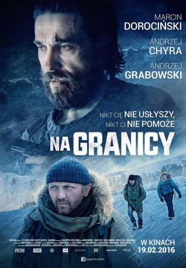

IMDB-Wertung: 5.7 / 10
IMDB-Wertung: 5.7 / 10  Metascore:
Metascore: 
A father and his two teenage sons travel to a small mountain cabin for a male-bonding adventure. When a mysterious stranger arrives at the cabin, their outing turns into a struggle for survival.
Alternativ: Na granicy
 IMDB-Wertung: 5.7 / 10 Metascore:
A father and his two teenage sons travel to a small mountain cabin for a male-bonding adventure. When a mysterious stranger arrives at the cabin, their outing turns into a struggle for survival.
Jahr: 2016
Dauer: 96 Minuten
FSK: 16
Land: Polen Studio: Lighthouse Home EntertainmentTonspuren:
Untertitel:
Auflösung: 1080p (1920x800) Größe: 4218 MB
Genre: Action, Thriller, Drama
Regisseur: Wojciech Kasperski
Drehbuch: Wojciech Kasperski
Soundtrack: Bartek Gliniak
Darsteller:
Datei: X:\2016(G-M)\Grenzgänger - Gefangen im Eis (2016, FSK16, 1920x800).mkv seit 27.01.2018
Festplatte: HD 2016(A-Z)
 Es gibt insgesamt 164 Filme in der Gruppe '2016(G-M)'
Es gibt insgesamt 164 Filme in der Gruppe '2016(G-M)'